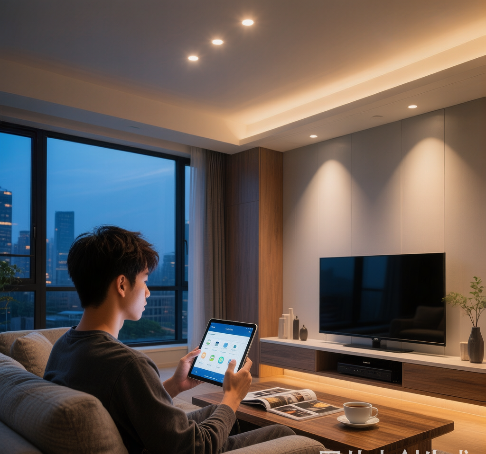

"刚装的智能灯又离线了"——这是智能家居用户群最常见的哀嚎。你花了几千块买的 Zigbee 灯具，手机 App 里却显示"设备未响应"。别急着退货，问题大概率不在灯本身，而在你看不见的无线网络层。
我做了三年 Zigbee 灯具产品，见过太多用户因为一个小细节整屋智能灯全挂。今天把我踩过的坑和排查思路整理出来，帮你一次性搞定。
为什么掉线的总是 Zigbee？
Zigbee 的底层是 IEEE 802.15.4，工作在 2.4GHz 频段。这个频段有个"邻居"叫 WiFi——你家路由器、微波炉、蓝牙耳机全挤在这里。
关键数据：Zigbee 信道和 WiFi 信道是重叠的。
| WiFi 信道 | 受影响 Zigbee 信道 |
|---|---|
| WiFi 1 | Zigbee 11-14 |
| WiFi 6 | Zigbee 16-19 |
| WiFi 11 | Zigbee 20-23 |
最常见的家用路由器默认跑 WiFi 6 或 WiFi 11，正好砸在 Zigbee 常用信道 15/20/25 上。如果你用 Zigbee2MQTT 默认信道 11，那和 WiFi 1 互相干扰更是家常便饭。
四步排查法
第一步：检查网关位置
网关（协调器）是整个 Zigbee 网络的"基站"。它挂了，所有设备都失联。
三个致命错误：
- 网关插在路由器 USB 口上——WiFi 和 Zigbee 天线距离不到 2cm，互相干扰大到离谱
- 网关藏在弱电箱里——金属箱体是天然信号屏蔽罩
- 网关插在角落插座上——信号覆盖直接砍半
正确做法：USB 延长线拉开 1 米以上，放在房屋中心位置，远离金属柜体和大功率电器。
第二步：优化信道
查一下你周围 WiFi 占用了哪些信道，然后选一个 Zigbee 信道避开它们。
Zigbee2MQTT 用户改信道最方便：编辑 configuration.yaml，把 channel 改成 15、20 或 25 中与 WiFi 不重叠的那个。改完需要重新配对所有设备——所以装修前就规划好信道是最佳实践。
# Zigbee2MQTT configuration.yaml
advanced:
channel: 20 # 避开 WiFi 1/6/11
transmit_power: 9 # 默认5，可调到9增强信号
第三步：排查路由节点
Zigbee 是 mesh 网络——不是所有设备都直连网关。中间的路由节点（通常是零火开关、插座、常供电灯具）负责转发信号。
这个场景你肯定遇到过：离网关最远的那个筒灯总是掉线，重启网关好一阵又掉。因为整个 mesh 链路断了。
排查方法：Zigbee2MQTT 里打开 Map 视图，看 LQI（链路质量）。LQI 低于 50 的链路就是不稳定链路。在信号薄弱的位置加一个零火 Zigbee 开关或插座做中继，通常能解决问题。
注意：电池供电设备（传感器、无线开关）是终端节点，不做路由。别指望用门上那个门磁传感器来扩展信号。
第四步：设备数量与路由器承载
单个 Zigbee 协调器理论上能带 200 个直接子设备，但实际稳定运行建议不超过 50-80 个。超过这个数，路由表维护开销会拖慢整个网络。
如果你家设备超过 50 个，考虑分区：客厅一个协调器，卧室一个协调器，通过 Home Assistant 统一管理。
进阶：干扰源的物理排查
除了 WiFi，这些也是 Zigbee 信号杀手：
| 干扰源 | 影响程度 | 解决方案 |
|---|---|---|
| USB 3.0 设备/线缆 | 严重 | 网关远离 USB 3.0 接口 |
| 微波炉运行中 | 中等 | 确保厨房有路由节点覆盖 |
| 蓝牙音箱/耳机 | 轻微 | 问题不大，频率跳变机制会避开 |
| LED 驱动电源 | 中等 | 劣质驱动 EMI 辐射超标，换好驱动 |
一个被忽略的真相：便宜 LED 驱动电源的电磁干扰（EMI）可能比 WiFi 更严重。如果你的灯在特定灯亮时才掉线，换一个过 CE/CCC 认证的驱动电源试试。
终极方案：上硬件的正确姿势
如果你正准备装修，从一开始就打好 Zigbee 网状网络的基础：
- 协调器选型：Sonoff Zigbee Dongle-E（基于 EFR32MG21）或 SMLIGHT SLZB-06（PoE 供电，可以拉到天花板位置），别用几十块的 CC2531
- 必须布零线：零火开关比单火开关多了路由功能，信号覆盖效果好一个量级
- 大面积用有线网关：SLZB-06 走网线 PoE，摆脱 USB 距离限制
- 首次配对按距离顺序：从近到远逐个加入，让 mesh 自然生成最优路由
写在最后
Zigbee 掉线从来不是玄学。信号干扰、mesh 拓扑、网关位置——每一个问题都有明确的物理原因和对应的解决方案。希望这篇文章帮你省下反复重启网关和跟客服扯皮的时间。
如果你的灯具是 nexLAMP 涂鸦 Zigbee 系列，遇到任何连接问题可以直接联系我们。三年产品和工程经验，比 App 里的"一键诊断"靠谱多了。
有问题欢迎评论区交流。需要 Zigbee 灯具或驱动电源，微信：13829424286